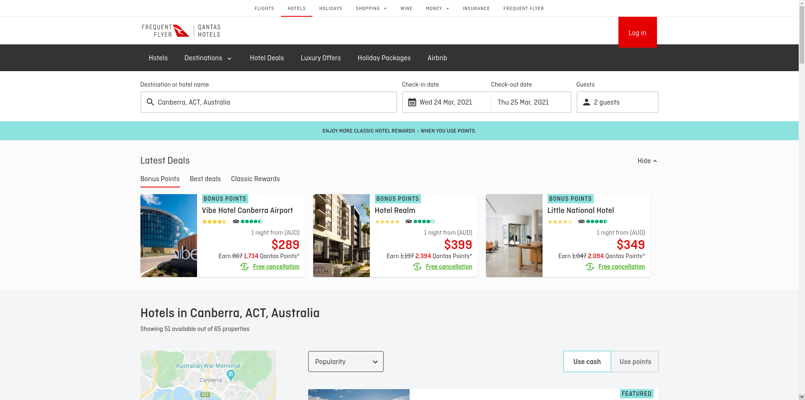

Hospitality Industry
As we all know hospitality industry is one of the contributing sector for any country's economy. Both developing nations and developed nations have invested huge amount of resources in hopitality industry and the industry has provided a lot of employement directly or indirectly. Hospitality industry is a lucrative industry but it is quiet risky one too. The industry has to update itself now and then, has to provide best services to its customer and should be error free. This is where the software shines in hospitality industry. Using various softwares, leading players in hospitality industries have been able to provide new experiences to its customer and are close to perfect for their services facility.
The Change:
Earlier whenever people used to travel from one place to another, they would have to look after each and every hotels and resorts where they could find a good service. This would sometime take people to undesirable places. Similarly, travelers were forced to look after accodomation by themselves. This is quiet hectic process and quiet unreliable too. But as internet grew up and web got stronger, new websites were launched to address the issue that were faced by travelers often. Online Booking Systems were introduced where people could book their hotels and restaurant with few click from their mobiles. This saved a lot of time and effort for travelers. Similarly, hopitality service providers were able to know about their upcoming guest, predict the arrival rate and get more insight about people responsse towards their services. Overall this made industry much more simple and easy to operate. Some of the leading gaints who created the changes in their respective field were: airbnb, Tripadvisor,Trivago, and so on.

Quantas Hotels Online Booking and Reservations System

Trivago Online Booking and Reservations System
The Reality:
Currently, online booking system are the leaders who are using programming and coding to its full potential. Customers can track their hotels destination using GPS. Both customer and service providers can rate their counter part and provide an insight on how they are to any other future reference. Travelers are able to find new service providers just with few clicks in their smart devices. Service providers are implementing bots that could help them with repetative task such as addressing customers in receiption, providing details in social medias. Customers are able to find any kinds of services that they need just with few click in their mobile apps. And this has changed the user experience a lot. Customers should not worry about finding services and wonder if they would get better service or not. Due to coding, they are just few clicks away from knowing each and every detail of their service provider. Similarly, service providers are able to know about their customers, their behaviour and their feedback with ease. Moreover, different governments have also accepted the changes that coding has brought to this industry. So many governments have launched their own apps and platform where new travelers and visitors can know about their country, culture and know how traveler can spend quality of time in their nation.
Future:
Coding is sure to make impact in hopitality industry more than ever. The greatest change that coding is going to bring is AR/VR technology in hospitality services. Customers can virtually feel any kind of services that they desire to use. First time travelers can explore any place remotely. Virtual Reality can change the whole landscape of hospitality industry. More use of apps and mobile services can lead to better performance of the industry. Human errors can be reduced drastically. Current scenario of booking services will be easy than now. New travelers can get to learn about new places and can plan their trip accordingly. Overall coding will bring more easeness and new changes in the field.